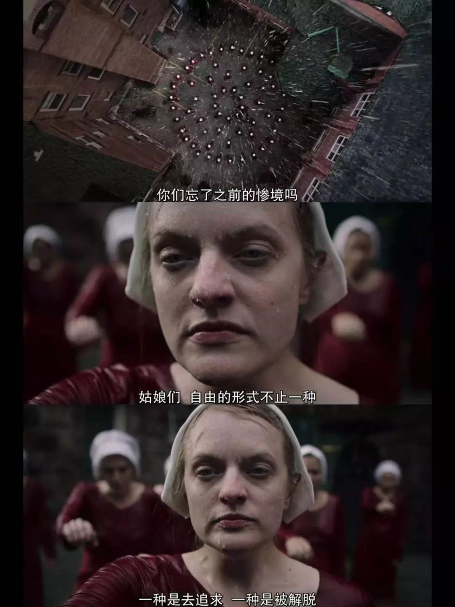
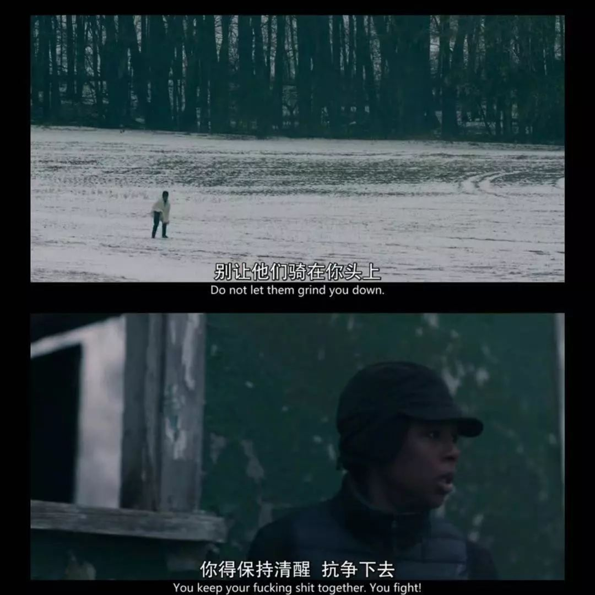

今天是联合国妇女权益和国际和平日，简称国际劳动妇女节。就业性别歧视大队部分成员借此机会，想跟大家分享一句话。
說什麽狗屁“女神”、“女王”節，有“聯合國婦女權益和國際和平日”聽著牛逼嗎？！找男人、找對象清空購物車 我他爹的自己就能清空購物車！誰說的過三八婦女節就是老女人了？！放你大爺的狗屁！憲法規定十八歲以上的女人都叫婦女！
拒絕被定義，老孃就做三八勞動節婦女！
我是白大樹，拒絕被標籤！ ——白大樹

希望男性和女性都可以一起过一个真正的妇女节。——阿宜
满十四即妇女，非女权不过节。——允晓皙
“平等的教育权和平等的事业权远比帮你清空购物车更女权。”最怕的是女性自己都搞不懂这一天的意义，跟着污名瞎起哄。——宝宝
妇女节快乐！——楼楼

妇女们应当首先停止对自己严苛，再考虑拯救世界。——tata
每位女性都可以选择自己喜欢的方向，从事自己热爱的职业，不断探索人生的可能性。——白纸
你不需要被人定义，更不需要被人规训。妇女，不是男权价值体系中所定义的，象征着年老色衰的贬义词，妇女不应该被污名化，妇女节快乐！——叶子
希望各位终可看到自由平等。——DoDoo
欢迎大家在留言里写下自己想说的话 ！